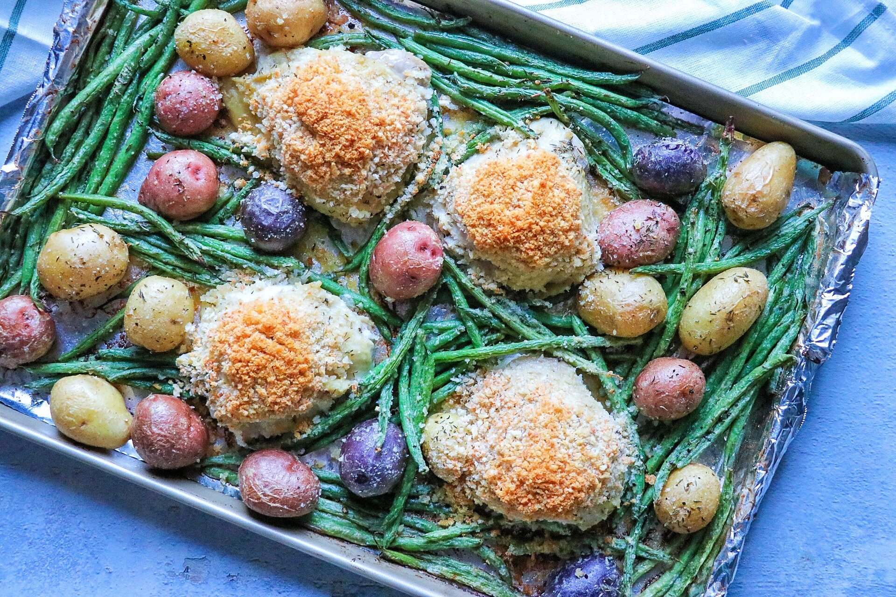

Meals I like
Lasagna
ingretients
- nonstick cooking spray
- ½ cup panko bread crumbs
- ¼ cup freshly grated Parmesan cheese
- 4 (5 ounce) bone-in, skin on chicken thighs
- ¼ cup melted butter
- 2 tablespoons Dijon mustard
- 1 ½ pounds tri-color baby potatoes (red, gold, and purple)
- 1 pound fresh green beans, trimmed
- 1 teaspoon dried thyme
- freshly cracked salt and pepper to taste

What to do
- Preheat the oven to 425 degrees F (220 degrees C). Line a large sheet pan or jelly roll pan with aluminum foil and coat with nonstick cooking spray.
- Mix bread crumbs and Parmesan cheese in a small bowl. Set aside.
- Place chicken thighs on the prepared baking sheet. Stir together butter and Dijon in a large bowl. Brush the tops of the chicken thighs with some of the butter-Dijon mixture.